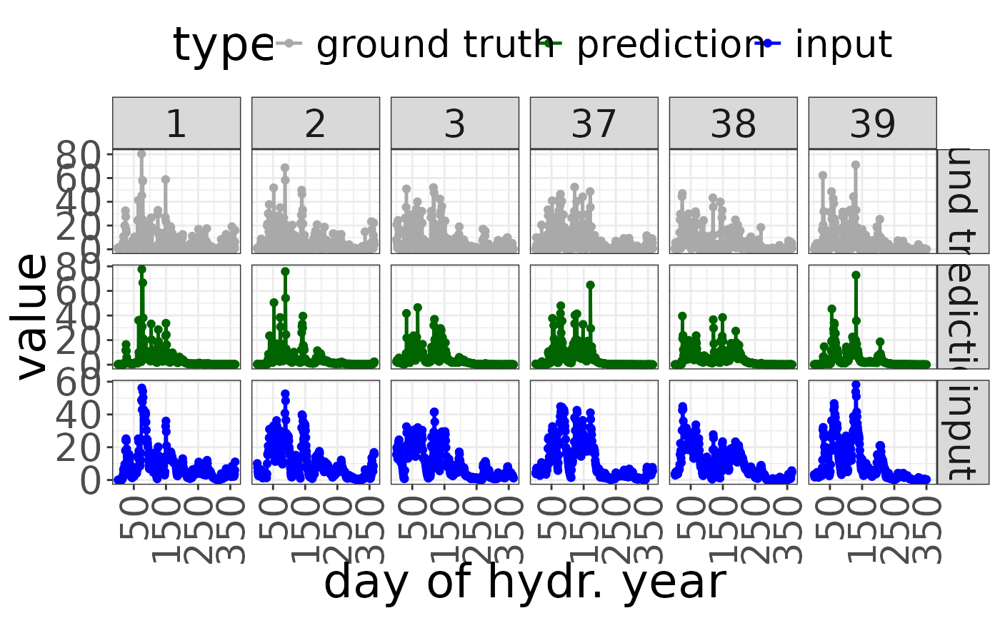
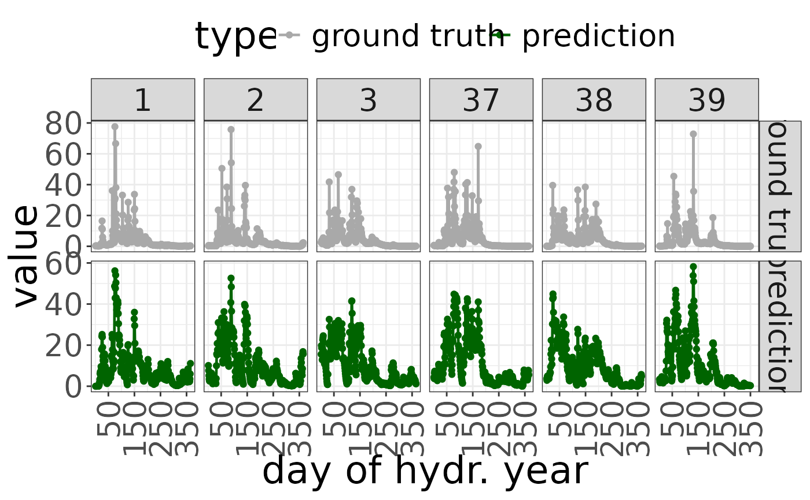

Plot prediction
plot_prediction.Rdplot the prediction and the reference
Arguments
- prediction
a vector or ts object of predicted values
- reference
a vector or ts object (on the same time scale as prediction) containing ground truth values
- ts_input
a vector or ts object containing the input time series
- scale
a String indicating which scale should be used for plotting; options are "year", "month" or "week"; default is "year"
- years
a vector of years to be included in the plot; if NULL, the first 3 and last 3 years will be used
- ...
currently unused
Examples
param <- cbind(
delta = c(0, 10),
sigma = c(2, 3))
mix <- rep(1, ncol(param))
mod <- createSWR(param = param, mix = mix)
pred <- predict(mod, newdata = sampleWatershed$rain)
plot_prediction(pred,
prediction = sampleWatershed$gauge,
reference = sampleWatershed$rain)

plot(mod,
type = "prediction",
newdata = sampleWatershed$rain,
reference = sampleWatershed$gauge)
